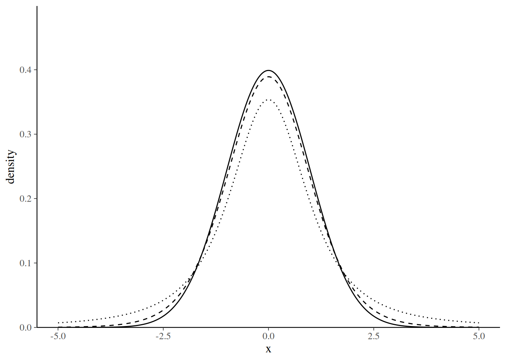
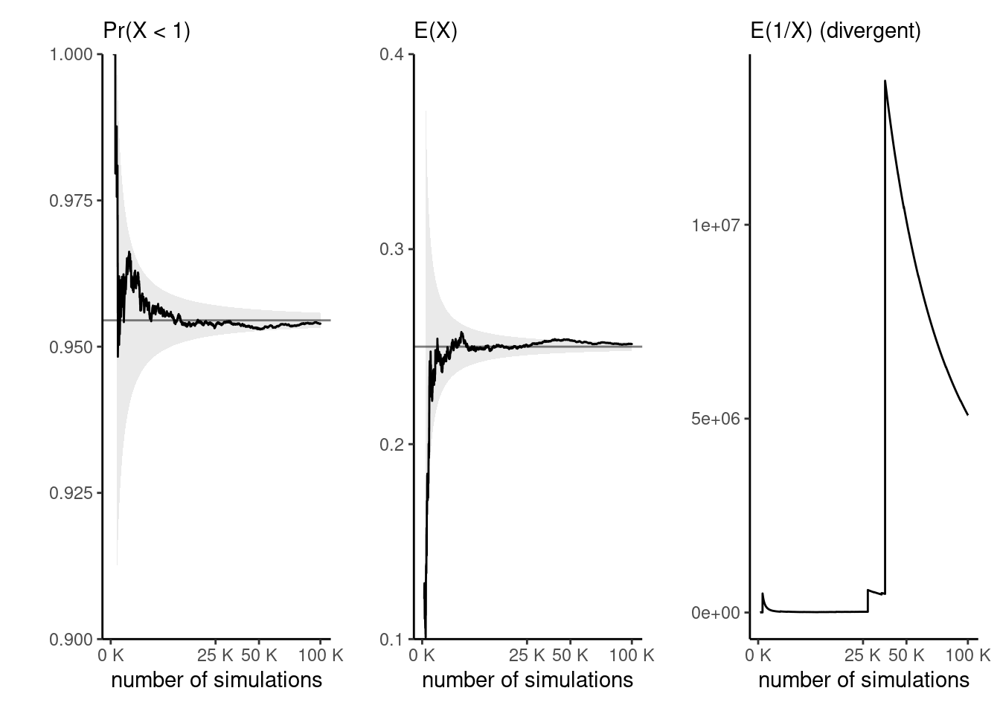
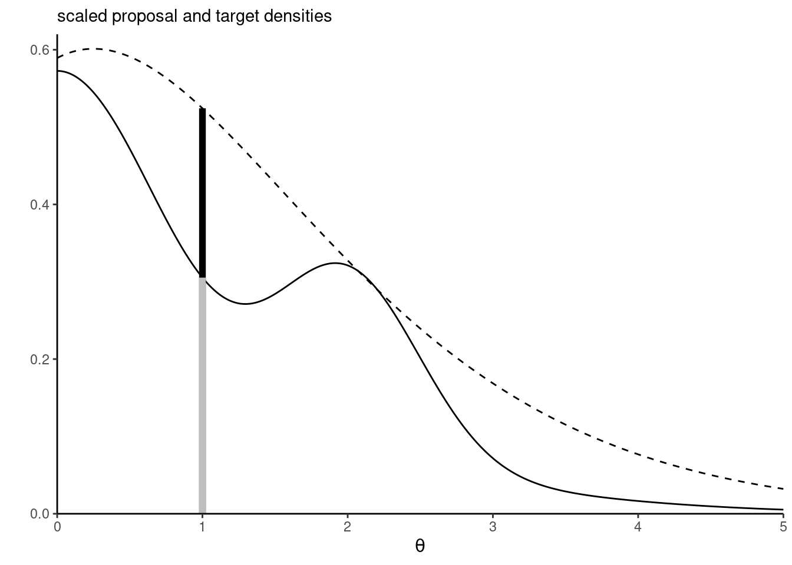
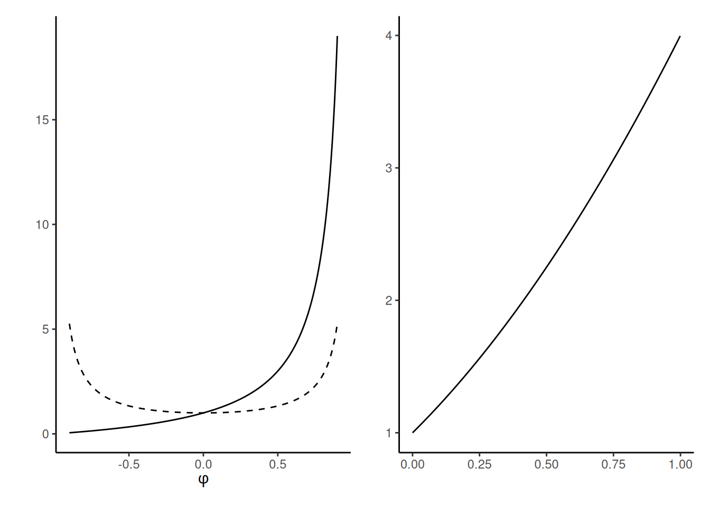
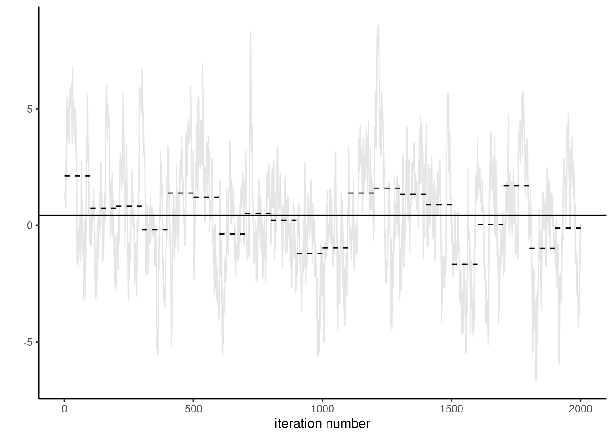
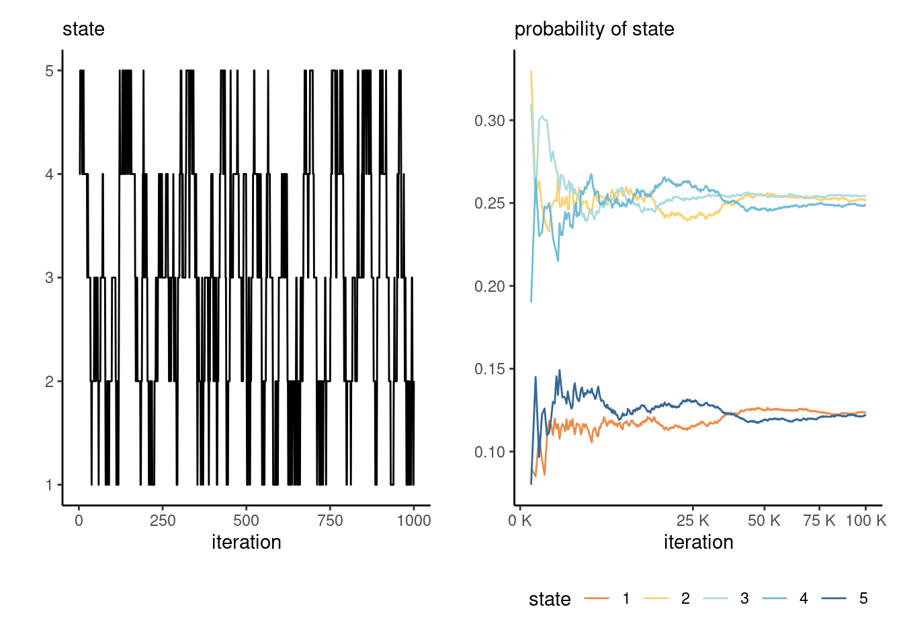

1 Introduction
This section review basic concepts in probability theory that will be used in the sequel. The overview begins with basic statistical concepts, random variables, their distribution and density, moments and likelihood derivations.
1.1 Random vectors
In the sequel, we characterize random vectors and their marginal, conditional and joint distributions. A good reference for this material is Chapter 3 of McNeil, Frey, and Embrechts (2005).
Definition 1.1 (Density and distribution function) Let \(\boldsymbol{X}\) denote a \(d\)-dimensional vector with real entries in \(\mathbb{R}^d\). The distribution function of \(\boldsymbol{X}\) is \[\begin{align*} F_{1:d}(\boldsymbol{x}) = \Pr(\boldsymbol{X} \leq \boldsymbol{x}) = \Pr(X_1 \leq x_1, \ldots, X_d \leq x_d). \end{align*}\] We use indices \(1:d = \{1, \ldots, d\}\) to explicit which components of \(\boldsymbol{X}\) are under consideration.
If the distribution of \(\boldsymbol{X}\) is absolutely continuous, we may write \[\begin{align*} F_{1:d}(\boldsymbol{x}) = \int_{-\infty}^{x_d} \cdots \int_{-\infty}^{x_1} f_{1:d}(z_1, \ldots, z_d) \mathrm{d} z_1 \cdots \mathrm{d} z_d, \end{align*}\] where \(f_{1:d}(\boldsymbol{x})\) is the joint density function. The density function can be obtained as the derivative of the distribution function with respect to all of it’s arguments.
The marginal distribution of a subvector \(\boldsymbol{X}_{1:k}=(X_1, \ldots, X_k)^\top\), without loss of generality consisting of the \(k\) first components of \(\boldsymbol{X}\) \((1 \leq k \leq d)\) is \[\begin{align*} F_{1:k}(\boldsymbol{x}_{1:d}) = \Pr(\boldsymbol{X}_{1:k} \leq \boldsymbol{x}_{1:k}) = F_{1:d}(x_1, \ldots, x_k, \infty, \ldots, \infty). \end{align*}\] and thus the marginal distribution of component \(j\), \(F_j(x_j)\), is obtained by evaluating all components but the \(j\)th at \(\infty\).
We likewise obtain the marginal density \[\begin{align*} f_{1:k}(\boldsymbol{x}_{1:k}) = \frac{\partial^k F_{1:k}(\boldsymbol{x}_{1:k})}{\partial x_1 \cdots \partial x_{k}}, \end{align*}\] or through integration from the joint density as \[\begin{align*} f_{1:k}(\boldsymbol{x}_{1:k}) = \int_{-\infty}^\infty \cdots \int_{-\infty}^\infty f_{1:d}(x_1, \ldots, x_k, z_{k+1}, \ldots, z_{d}) \mathrm{d} z_{k+1} \cdots \mathrm{d}z_d. \end{align*}\]
Definition 1.2 (Conditional distribution) Let \(\boldsymbol{X}_{1:d} = (\boldsymbol{X}_{1:k}^\top, \boldsymbol{X}_{(k+1):d}^\top)^\top\) be a \(d\)-dimensional random vector with absolutely continuous margins and joint density \(f_{1:d}\), or else a discrete distribution with mass function \(f_{1:d}\). The conditional distribution function of \(\boldsymbol{X}_{1:k}\) given \(\boldsymbol{X}_{(k+1):d}\), is defined implicitly from the relationship \[\begin{align*} f_{1:k \mid (k+1):d}(\boldsymbol{x}_{1:k}; \boldsymbol{x}_{(k+1):d}) = \frac{f_{1:d}(\boldsymbol{x}_{1:d})}{f_{(k+1):d}(\boldsymbol{x}_{(k+1):d})} \end{align*}\] for any value of \(\boldsymbol{x}\) in the support of \(\boldsymbol{X}\), i.e., the set of values with non-zero density or mass and \(f_{(k+1):d}(\boldsymbol{x}_{(k+1):d})>0\); it is undefined otherwise.
Definition 1.3 (Independence) Let \(\boldsymbol{X}_{1:d} = (\boldsymbol{X}_{1:k}^\top, \boldsymbol{X}_{(k+1):d}^\top)^\top\) be a \(d\)-dimensional random vector. We say that \(\boldsymbol{X}_{1:k}\) and \(\boldsymbol{X}_{(k+1):d}\) are independent if their joint distribution function factorizes as \[\begin{align*} F_{1:d}(\boldsymbol{x}_{1:k}, \boldsymbol{x}_{(k+1):d}) = F_{1:k}(\boldsymbol{x}_{1:k})F_{(k+1):d}(\boldsymbol{x}_{(k+1):d}) \end{align*}\] for any value of \(\boldsymbol{x}_{1:k}\), \(\boldsymbol{x}_{(k+1):d}\). It follows from the definition of joint density that, should the latter exists, it also factorizes as \[\begin{align*} f_{1:d}(\boldsymbol{x}_{1:k}, \boldsymbol{x}_{(k+1):d}) = f_{1:k}(\boldsymbol{x}_{1:k})f_{(k+1):d}(\boldsymbol{x}_{(k+1):d}). \end{align*}\]
If two subvectors \(\boldsymbol{X}_{1:k}\) and \(\boldsymbol{X}_{(k+1):d}\) are independent, then the conditional density \(f_{1:k \mid (k+1):d}\) equals the marginal \(f_{1:k}\).
1.1.1 Common distributions
Definition 1.4 (Gamma, chi-square and exponential distributions) A random variable follows a gamma distribution with shape \(\alpha>0\) and rate \(\beta>0\), denoted \(Y \sim \mathsf{gamma}(\alpha, \beta)\), if it’s density is \[\begin{align*} f(x) = \frac{\beta^\alpha}{\Gamma(\alpha)}x^{\alpha-1}\exp(-\beta x), \qquad x \in (0, \infty), \end{align*}\] where \(\Gamma(\alpha)\coloneqq\int_0^\infty t^{\alpha-1}\exp(-t)\mathrm{d} t\) is the gamma function.
If \(\alpha=1\), the density simplifies to \(\beta \exp(-\beta x)\) and we recover the exponential distribution. The case \(\mathsf{gamma}(\nu/2, 1/2)\) corresponds to the chi-square distribution \(\chi^2_\nu\).
Definition 1.5 (beta and uniform distribution) The beta distribution \(\mathsf{beta}(\alpha_1, \alpha_2)\) is a distribution supported on the unit interval \([0,1]\) with shape parameters \(\alpha_1>0\) and \(\alpha_2>0.\) It’s density is \[\begin{align*} f(x) = \frac{\Gamma(\alpha_1)\Gamma(\alpha_2)}{\Gamma(\alpha_1+\alpha_2)}x^{\alpha_1-1}(1-x)^{1-\alpha_2}, \qquad x \in [0,1]. \end{align*}\] The case \(\mathsf{beta}(1,1)\), also denoted \(\mathsf{unif}(0,1)\), corresponds to a standard uniform distribution.
The beta distribution is commonly used to model proportions, and can be generalized to the multivariate setting as follows.
Definition 1.6 (Dirichlet distribution) Let \(\boldsymbol{\alpha} \in (0, \infty)^d\) denote shape parameters and cosider a random vector of size \(d\) with positive components on the simplex \[\mathbb{S}_{d-1}: \{ 0 \leq x_j \leq 1; j=1, \ldots, d: x_1 + \cdots + x_d=1\}.\] The density of a Dirichlet random vector, denoted \(\boldsymbol{Y} \sim \mathsf{Dirichlet}(\boldsymbol{\alpha})\), is \[\begin{align*} f(\boldsymbol{x}) = \frac{\prod_{j=1}^{d-1}\Gamma(\alpha_j)}{\Gamma(\alpha_1 + \cdots + \alpha_d)}\prod_{j=1}^{d} x_j^{\alpha_j-1}, \qquad \boldsymbol{x} \in \mathbb{S}_{d-1} \end{align*}\]
Due to the linear dependence, the \(d\)th component \(x_d = 1- x_1 - \cdots - x_{d-1}\) is fully determined.
Definition 1.7 (Binomial distribution) The density of the binomial distribution, denoted \(Y \sim \mathsf{Binom}(n, p)\), is \[\begin{align*} f(x) = \mathsf{Pr}(Y=x) = \binom{m}{x}p^x (1-p)^{m-x}, \quad x=0, 1, \ldots, n. \end{align*}\]
If \(n=1\), we recover the Bernoulli distribution with density \(f(x) = p^{y}(1-p)^{1-y}\). The binomial distribution is closed under convolution, meaning that the number the number of successes \(Y\) out of \(n\) Bernoulli trials is binomial
Definition 1.8 (Multinomial distribution) If there are more than two outcomes, say \(d\), we can generalize this mass function. Suppose that \(\boldsymbol{Y}=(Y_1, \ldots, Y_d)\) denotes the number of realizations of each of the \(d\) outcomes based on \(n\) trials, so that \(0 \leq Y_j \leq n (j=1, \ldots, d)\) and \(Y_1 + \cdots + Y_d=n\). The joint density of the multinomial vector \(\boldsymbol{Y} \sim \mathsf{multinom}(\boldsymbol{p})\) with probability vector \(\boldsymbol{p} \in \mathbb{S}_{d-1}\) is \[\begin{align*} f(\boldsymbol{x}) = \frac{n!}{\prod_{j=1}^d x_j!} \prod_{j=1}^d p_j^{x_j}, \qquad \boldsymbol{y}/n \in \mathbb{S}_{d-1}, \end{align*}\] where \(x! = \Gamma(x+1)\) denotes the factorial function.
Definition 1.9 (Poisson distribution) If the probability of success \(p\) of a Bernoulli event is small in the sense that \(np \to \lambda\) when the number of trials \(n\) increases, then the number of success follows approximately a Poisson distribution with mass function \[\begin{align*} f(x)=\mathsf{Pr}(Y=x) = \frac{\exp(-\lambda)\lambda^y}{\Gamma(y+1)}, \quad x=0, 1, 2, \ldots \end{align*}\] where \(\Gamma(\cdot)\) denotes the gamma function. The parameter \(\lambda\) of the Poisson distribution is both the expectation and the variance of the distribution, meaning \(\mathsf{E}(Y)=\mathsf{Va}(Y)=\lambda.\) We denote the distribution as \(Y \sim \mathsf{Poisson}(\lambda)\).
The most frequently encountered distribution is termed normal, but we use the terminology Gaussian
Definition 1.10 (Gaussian distribution) Consider a \(d\) dimensional vector \(\boldsymbol{Y} \sim \mathsf{normal}_d(\boldsymbol{\mu}, \boldsymbol{Q}^{-1})\) with density \[\begin{align*} f(\boldsymbol{x}) = (2\pi)^{-d/2} |\boldsymbol{Q}|^{1/2} \exp \left\{ - \frac{1}{2} (\boldsymbol{x}-\boldsymbol{\mu})^\top \boldsymbol{Q}(\boldsymbol{x}-\boldsymbol{\mu})\right\}, \qquad \boldsymbol{x} \in \mathbb{R}^d \end{align*}\]
The mean vector \(\boldsymbol{\mu}\) is the vector of expectation of individual observations, whereas \(\boldsymbol{Q}^{-1}\), often denoted \(\boldsymbol{\Sigma}\) is the \(d \times d\) covariance matrix of \(\boldsymbol{Y}\) and \(\boldsymbol{Q}\), the canonical parameter, is the precision matrix.
In the univariate case, the density of \(\mathsf{normal}(\mu, \sigma^2)\) reduces to \[\begin{align*} f(x) = (2\pi\sigma^2)^{-1/2} \exp \left\{ - \frac{(x-\mu)^2}{2\sigma^2}\right\}, \qquad x \in \mathbb{R}. \end{align*}\]
Proposition 1.1 (Gaussian vectors, independence and conditional independence properties)
A unique property of the multivariate normal distribution is the link between independence and the covariance matrix: components \(Y_i\) and \(Y_j\) are independent if and only if the \((i,j)\) off-diagonal entry of the covariance matrix \(\boldsymbol{Q}^{-1}\) is zero.
If \(q_{ij}=0\), then \(Y_i\) and \(Y_j\) are conditionally independent given the other components.
The Gaussian distribution is an elliptical distribution which is symmetric around it’s mode, and it is a location-scale family: if \(\boldsymbol{L} = \mathrm{chol}(\boldsymbol{Q})\), meaning \(\boldsymbol{Q}=\boldsymbol{LL}^\top\) for some lower triangular matrix \(\boldsymbol{L}\), then \[\boldsymbol{L}^\top(\boldsymbol{Y}-\boldsymbol{\mu}) \sim \mathsf{normal}_d(\boldsymbol{0}_d, \mathbf{I}_d).\] Conversely, we can use the Cholesky root to sample multivariate Gaussian vectors by forward solving
The canonical parameter for the scale is the precision matrix \(\boldsymbol{Q} = \boldsymbol{\Sigma}^{-1},\) the inverse covariance.
Quadratic forms of Gaussians \((\boldsymbol{Y}-\boldsymbol{\mu})^\top\boldsymbol{\Sigma}^{-1}(\boldsymbol{Y}-\boldsymbol{\mu})\sim \chi^2(n).\)
:::
Proposition 1.2 (Partitionning of covariance matrices) Let \(\boldsymbol{\Sigma}\) be a \(d \times d\) positive definite covariance matrix. We define the precision matrix \(\boldsymbol{Q} = \boldsymbol{\Sigma}^{-1}\). Suppose the matrices are partitioned into blocks, \[\begin{align*} \boldsymbol{\Sigma}= \begin{pmatrix} \boldsymbol{\Sigma}_{11} & \boldsymbol{\Sigma}_{12} \\ \boldsymbol{\Sigma}_{21} & \boldsymbol{\Sigma}_{22} \end{pmatrix} \text{ and } \boldsymbol{\Sigma}^{-1}= \boldsymbol{Q} = \begin{pmatrix} \boldsymbol{Q}_{11} &\boldsymbol{Q}_{12} \\ \boldsymbol{Q}_{21} & \boldsymbol{Q}_{22} \end{pmatrix} \end{align*}\] with \(\dim(\boldsymbol{\Sigma}_{11})=k\times k\) and \(\dim(\boldsymbol{\Sigma}_{22})=(d-k) \times (d-k)\). One can show the following relationships:
- \(\boldsymbol{\Sigma}_{12}\boldsymbol{\Sigma}_{22}^{-1}=-\boldsymbol{Q}_{11}^{-1}\boldsymbol{Q}_{12}\)
- \(\boldsymbol{\Sigma}_{11}-\boldsymbol{\Sigma}_{12}\boldsymbol{\Sigma}_{22}^{-1}\boldsymbol{\Sigma}_{21}=\boldsymbol{Q}_{11}^{-1}\)
- \(\det(\boldsymbol{\Sigma})=\det(\boldsymbol{\Sigma}_{22})\det(\boldsymbol{\Sigma}_{1|2})\) where \(\boldsymbol{\Sigma}_{1|2}=\boldsymbol{\Sigma}_{11}-\boldsymbol{\Sigma}_{12}\boldsymbol{\Sigma}_{22}^{-1}\boldsymbol{\Sigma}_{21}\).
Proposition 1.3 (Conditional distribution of Gaussian vectors) Let \(\boldsymbol{Y} \sim \mathsf{normal}_d(\boldsymbol{\mu}, \boldsymbol{\Sigma})\) and consider the partition \[\begin{align*} \boldsymbol{Y} = \begin{pmatrix} \boldsymbol{Y}_1 \\ \boldsymbol{Y}_2\end{pmatrix}, \quad \boldsymbol{\mu} = \begin{pmatrix} \boldsymbol{\mu}_1 \\ \boldsymbol{\mu}_2\end{pmatrix}, \quad \boldsymbol{\Sigma} = \begin{pmatrix} \boldsymbol{\Sigma}_{11} & \boldsymbol{\Sigma}_{12}\\ \boldsymbol{\Sigma}_{21} & \boldsymbol{\Sigma}_{22}\end{pmatrix}, \end{align*}\] where \(\boldsymbol{Y}_1\) is a \(k \times 1\) and \(\boldsymbol{Y}_2\) is a \((d-k) \times 1\) vector for some \(1\leq k < d.\) Show that the conditional distribution \[\begin{align*} \boldsymbol{Y}_1 \mid \boldsymbol{Y}_2 =\boldsymbol{y}_2 \sim \mathsf{normal}_k(\boldsymbol{\mu}_1+\boldsymbol{\Sigma}_{12} \boldsymbol{\Sigma}_{22}^{-1}(\boldsymbol{y}_2-\boldsymbol{\mu}_2), \boldsymbol{\Sigma}_{1|2}) \\& \sim \mathsf{normal}_k(\boldsymbol{\mu}_1-\boldsymbol{Q}_{11}^{-1}\boldsymbol{Q}_{12}(\boldsymbol{y}_2-\boldsymbol{\mu}_2), \boldsymbol{Q}^{-1}_{11}) \end{align*}\] and \(\boldsymbol{\Sigma}_{1|2}=\boldsymbol{\Sigma}_{11}-\boldsymbol{\Sigma}_{12}\boldsymbol{\Sigma}_{22}^{-1}\boldsymbol{\Sigma}_{21}\) is the Schur complement of \(\boldsymbol{\Sigma}_{22}\).
It is easier to obtain this result by expressing the density of the Gaussian distribution in terms of the precision matrix \(\boldsymbol{Q}= \left(\begin{smallmatrix}\boldsymbol{Q}_{11} & \boldsymbol{Q}_{12}\\ \boldsymbol{Q}_{21} & \boldsymbol{Q}_{22}\end{smallmatrix}\right)\) rather than in terms of the covariance matrix \(\boldsymbol{\Sigma}\).
Consider the partition \(\boldsymbol{Y}=(\boldsymbol{Y}_1, \boldsymbol{Y}_2)\). The conditional density as a function of \(\boldsymbol{y}_1\) is given, up to proportionality, by \[\begin{align*} f(\boldsymbol{y}_1 \mid \boldsymbol{y}_2) &\stackrel{\boldsymbol{y}_1}{\propto} \exp \left\{ -\frac{1}{2}\left(\boldsymbol{y}_1-\boldsymbol{\mu}_1\right)^\top \boldsymbol{Q}_{11}\left(\boldsymbol{y}_1-\boldsymbol{\mu}_1\right) - \left(\boldsymbol{y}_1-\boldsymbol{\mu}_1\right)^\top \boldsymbol{Q}_{12}\left(\boldsymbol{y}_2-\boldsymbol{\mu}_2\right)\right\}\\ &\stackrel{\boldsymbol{y}_1}{\propto} \exp\left[-\frac{1}{2}\boldsymbol{y}_1^\top\boldsymbol{Q}_{11}\boldsymbol{y}_1-\boldsymbol{y}_1^\top \left\{\boldsymbol{Q}_{11}\boldsymbol{\mu}_1-\boldsymbol{Q}_{12}\left(\boldsymbol{y}_2-\boldsymbol{\mu}_2\right)\right\} \right] \end{align*}\] upon completing the square in \(\boldsymbol{y}_1\). This integrand is proportional to the density of a Gaussian distribution (and hence must be Gaussian) with precision matrix \(\boldsymbol{Q}_{11}\), while the mean vector and covariance matrix are \[\begin{align*} \boldsymbol{\mu}_{1|2} &= \boldsymbol{\mu}_1-\boldsymbol{Q}_{11}^{-1}\boldsymbol{Q}_{12} \left(\boldsymbol{y}_2-\boldsymbol{\mu}_2\right) \\&=\boldsymbol{\mu}_1+ \boldsymbol{\Sigma}_{12}\boldsymbol{\Sigma}_{22}^{-1}\left(\boldsymbol{y}_2-\boldsymbol{\mu}_2\right) \\\boldsymbol{\Sigma}_{1|2} &= \boldsymbol{\Sigma}_{11}-\boldsymbol{\Sigma}_{12}\boldsymbol{\Sigma}_{22}^{-1}\boldsymbol{\Sigma}_{21}. \end{align*}\] Note that \(\boldsymbol{\Sigma}_{1|2}=\boldsymbol{Q}_{11}^{-1}\) corresponds to the Schur complement of \(\boldsymbol{\Sigma}_{22}\).
Remark that the above is sufficient (why?). The quadratic form appearing in the exponential term of the density of a Gaussian vector with mean \(\boldsymbol{\nu}\) and precision \(\boldsymbol{\varPsi}\) is \[\begin{align*} (\boldsymbol{x}-\boldsymbol{\nu})^\top\boldsymbol{\varPsi}(\boldsymbol{x}-\boldsymbol{\nu})= \boldsymbol{x}^\top\boldsymbol{\varPsi}\boldsymbol{x} - \boldsymbol{x}^\top\boldsymbol{\varPsi}\boldsymbol{\nu} - \boldsymbol{\nu}^\top\boldsymbol{\varPsi}\boldsymbol{x} + \boldsymbol{\nu}^\top\boldsymbol{\varPsi}\boldsymbol{\nu}. \end{align*}\] uniquely determines the parameters of the Gaussian distribution. The quadratic term in \(\boldsymbol{x}\) forms a sandwich around the precision matrix, while the linear term identifies the location vector. Since any (conditional) density function integrates to one, there is a unique normalizing constant and the latter need not be computed.
An alternative derivation of the result is given below. Suppose without loss of generality that \(\boldsymbol{\mu}=\boldsymbol{0}_n\). One can write the joint density as the product of the marginal and conditional densities \[\begin{align*} f_{\boldsymbol{Y}}(\boldsymbol{y}_1, \boldsymbol{y}_2) = f_{\boldsymbol{Y}_1 \mid \boldsymbol{Y}_2}(\boldsymbol{y}_1 \mid \boldsymbol{y}_2)f_{\boldsymbol{Y}_2}(\boldsymbol{y}_2). \end{align*}\] Completing the square in \(\boldsymbol{y}_1\) in the exponential gives \[\begin{align} \boldsymbol{y}^\top \boldsymbol{Q}\boldsymbol{y} = (\boldsymbol{y}_1+ \boldsymbol{Q}_{11}^{-1}\boldsymbol{Q}_{12}\boldsymbol{y}_2)^\top\boldsymbol{Q}_{11}(\boldsymbol{y}_1+ \boldsymbol{Q}_{11}^{-1}\boldsymbol{Q}_{12}\boldsymbol{y}_2) + \boldsymbol{y}_2^\top \boldsymbol{\Sigma}_{22}^{-1}\boldsymbol{y}_2 \tag{S1} \label{eq:square} \end{align}\] and we can interpret the first term on the right hand side as a function of \(\boldsymbol{y}_1\) given \(\boldsymbol{y}_2\) and the second as \(\boldsymbol{y}_2\) alone. By using the transformation matrix \(\mathbf{A}=(\mathbf{I}_k, \mathbf{O}_{k, n-k})^\top\), we conclude that \(\boldsymbol{Y}_2 \sim \mathsf{normal}_{n-k}(\boldsymbol{\mu}_2, \boldsymbol{\Sigma}_{22})\). The marginal distribution can also be obtained by integrating out \(\boldsymbol{y}_1\) in \(f_{\boldsymbol{Y}}(\boldsymbol{y}_1, \boldsymbol{y}_2)\). Thus, the conditional density is the ratio \[\begin{align*} \frac{f_{\boldsymbol{Y}}(\boldsymbol{y}_1, \boldsymbol{y}_2)}{f_{\boldsymbol{Y}_2}(\boldsymbol{y}_2)}&= \frac{(2\pi)^{-n/2} |\boldsymbol{Q}|^{1/2}\exp\left\{-\frac{1}{2} \left(\boldsymbol{y}_1^\top\boldsymbol{Q}_{11}\boldsymbol{y}_1+\boldsymbol{y}_1^\top\boldsymbol{Q}_{12}\boldsymbol{y}_2+\boldsymbol{y}_2^\top\boldsymbol{Q}_{21}\boldsymbol{y}_1+\boldsymbol{y}_2^\top\boldsymbol{ \Psi}_{22}\boldsymbol{y}_2\right)\right\}}{(2\pi)^{-(n-k)/2}|\boldsymbol{\Sigma}_{22}|^{-1/2}\exp\left(-\frac{1}{2} \boldsymbol{y}_2 \boldsymbol{\Sigma}^{-1}_{22}\boldsymbol{y}_2\right)} \\&=(2\pi)^{-k/2}|\boldsymbol{Q}|^{1/2} \frac{\exp \left\{ -\frac{1}{2}\left(\boldsymbol{y}_1^\top\boldsymbol{Q}_{11}\boldsymbol{y}_1+2\boldsymbol{y}_1^\top\boldsymbol{Q}_{12}\boldsymbol{y}_2 + \boldsymbol{y}_2^\top\boldsymbol{Q}_{21}\boldsymbol{Q}_{11}^{-1}\boldsymbol{Q}_{12}\boldsymbol{y}_2 \right)\right\}}{\exp\left\{-\frac{1}{2} \left(\boldsymbol{y}_2 \boldsymbol{\Sigma}^{-1}_{22}\boldsymbol{y}_2 + \boldsymbol{y}_2^\top\boldsymbol{Q}_{22}\boldsymbol{y}_2-\boldsymbol{y}_2^\top\boldsymbol{Q}_{21}\boldsymbol{Q}_{11}^{-1}\boldsymbol{Q}_{12}\boldsymbol{y}_2\right)\right\}} \end{align*}\] making use of the identity \(|\boldsymbol{Q}| = |\boldsymbol{Q}_{11}||\boldsymbol{\Sigma}_{22}|^{-1}.\)
Definition 1.11 (Student-\(t\) distribution) The name “Student” comes from the pseudonym used by William Gosset in Gosset (1908), who introduced the asymptotic distribution of the \(t\)-statistic.
The density of \(\boldsymbol{Y} \sim \mathsf{Student}_d(\boldsymbol{\mu}, \boldsymbol{Q}^{-1}, \nu)\), with location vector \(\boldsymbol{\mu}\), scale matrix \(\boldsymbol{Q}^{-1}\) and \(\nu\) degrees of freedom is \[\begin{align*} f(\boldsymbol{x}) = \frac{\Gamma \left( \frac{\nu+d}{2}\right)|\boldsymbol{Q}|^{1/2}}{\Gamma\left(\frac{\nu}{2}\right) (\nu\pi)^{d/2}}\left(1+\frac{1}{\nu} (\boldsymbol{x}-\boldsymbol{\mu})^\top\boldsymbol{Q}(\boldsymbol{x}-\boldsymbol{\mu})\right)^{-\frac{\nu+d}{2}}, \qquad \boldsymbol{x} \in \mathbb{R}^d \end{align*}\] The Student distribution is a location-scale family and an elliptical distribution. The distribution has polynomial tails, is symmetric around \(\boldsymbol{0}_d\) and unimodal. As \(\nu \to \infty\), the Student distribution converges to a normal distribution. It has heavier tails than the normal distribution and only the first \(\nu-1\) moments of the distribution exist. The case \(\nu=1\) is termed Cauchy distribution.
1.2 Monte Carlo methods
Consider a target distribution with finite expected value. The law of large numbers guarantees that, if we can draw observations from our target distribution, then the sample average will converge to the expected value of that distribution, as the sample size becomes larger and larger, provided the expectation is finite.
We can thus compute the probability of any event or the expected value of any (integrable) function by computing sample averages; the cost to pay for this generality is randomness.
Specifically, suppose we are interested in the average \(\mathsf{E}\{g(X)\}\) of \(X \sim F\) for some function \(g\).
Example 1.1 Consider \(X \sim \mathsf{Gamma}(\alpha, \beta)\), a gamma distribution with shape \(\alpha\) and rate \(\beta\). We can compute the probability that \(X < 1\) easily by Monte Carlo since \(\Pr(X <1) = \mathsf{E}\{\mathrm{I}(X<1)\}\) and this means we only need to compute the proportion of draws less than one. We can likewise compute the mean \(g(x) = x\) or variance.
Suppose we have drawn a Monte Carlo sample of size \(B\). If the function \(g(\cdot)\) is square integrable,1 with variance \(\sigma^2_g\), then a central limit theorem applies. In large samples and for independent observations, our Monte Carlo average \(\widehat{\mu}_g = B^{-1}\sum_{b=1}^B g(X_i)\) has variance \(\sigma^2_g/B\). We can approximate the unknown variance \(\sigma^2_g\) by it’s empirical counterpart.2. Note that, while the variance decreases linearly with \(B\), the choice of \(g\) impacts the speed of convergence: we can compute \[\sigma^2_g =\Pr(X \leq 1)\{1-\Pr(X \leq 1)\}=0.0434\] (left) and \(\sigma^2_g=\alpha/\beta^2=1/8\) (middle plot).
Figure 1.2 shows the empirical trace plot of the Monte Carlo average (note the \(\sqrt{B}\) \(x\)-axis scale!) as a function of the Monte Carlo sample size \(B\) along with 95% Wald-based confidence intervals (gray shaded region), \(\widehat{\mu}_g \pm 1.96 \times \sigma_g/\sqrt{B}\). We can see that the ‘likely region’ for the average shrinks with \(B\).
What happens if our function is not integrable? The right-hand plot of Figure 1.2 shows empirical averages of \(g(x) = x^{-1}\), which is not integrable if \(\alpha < 1\). We can compute the empirical average, but the result won’t converge to any meaningful quantity regardless of the sample size. The large jumps are testimonial of this.

We have already used Monte Carlo methods to compute posterior quantities of interest in conjugate models. Outside of models with conjugate priors, the lack of closed-form expression for the posterior precludes inference. Indeed, calculating the posterior probability of an event, or posterior moments, requires integration of the normalized posterior density and thus knowledge of the marginal likelihood. It is seldom possible to sample independent and identically distributed (iid) samples from the target, especially if the model is high dimensional: rejection sampling and the ratio of uniform method are examples of Monte Carlo methods which can be used to generate iid draws.
Proposition 1.4 (Rejection sampling) Rejection sampling (also termed accept-reject algorithm) samples from a random vector with density \(p(\cdot)\) by drawing candidates from a proposal with density \(q(\cdot)\) with nested support, \(\mathrm{supp}(p) \subseteq \mathrm{supp}(q)\). The density \(q(\cdot)\) must be such that \(p(\boldsymbol{\theta}) \leq C q(\boldsymbol{\theta})\) for \(C \geq 1\) for all values of \(\boldsymbol{\theta}\) in the support of \(p(\cdot)\). A proof can be found in Devroye (1986, Theorem 3.1)
- Generate \(\boldsymbol{\theta}^{\star}\) from the proposal with density \(q\) and \(U \sim \mathsf{U}(0,1)\)
- Compute the ratio \(R \gets p(\boldsymbol{\theta}^{\star})/ q(\boldsymbol{\theta}^{\star})\).
- If \(R \geq CU\), return \(\boldsymbol{\theta}\), else go back to step 1.

Rejection sampling requires the proposal \(q\) to have a support at least as large as that of \(p\) and resemble closely the density. It should be chosen so that the upper bound \(C\) is as sharp as possible and close to 1. The dominating density \(q\) must have heavier tails than the density of interest. The expected number of simulations needed to accept one proposal is \(C.\) Finally, for the method to be useful, we need to be able to simulate easily and cheaply from the proposal. The optimal value of \(C\) is \(C = \sup_{\boldsymbol{\theta}} p(\boldsymbol{\theta}) / q(\boldsymbol{\theta})\). This quantity may be obtained by numerical optimization, by finding the mode of the ratio of the log densities if the maximum is not known analytically.
Example 1.2 (Truncated Gaussian distribution) Consider the problem of sampling from a Gaussian distribution \(Y \sim \mathsf{Norm}(\mu, \sigma^2)\) truncated in the interval \([a, b],\) which has density \[\begin{align*} f(x; \mu, \sigma, a, b) = \frac{1}{\sigma}\frac{\phi\left(\frac{x-\mu}{\sigma}\right)}{\Phi\{(b-\mu)/\sigma\}-\Phi\{(a-\mu)/\sigma\}}. \end{align*}\] where \(\phi(\cdot), \Phi(\cdot)\) are respectively the density and distribution function of the standard Gaussian distribution.
Since the Gaussian is a location-scale family, we can reduce the problem to sampling \(X\) from a standard Gaussian truncated on \(\alpha = (a-\mu)/\sigma\) and \(\beta = (b-\mu)/\sigma\) and back transform the result as \(Y = \mu + \sigma X\).
A crude accept-reject sampling algorithm would consider sampling from the same untruncated distribution with density \(g(X) = \sigma^{-1}\phi\{(x-\mu)/\sigma\}\), and the acceptance ratio is \(C^{-1}=\{\Phi(\beta) - \Phi(\alpha)\}\). We thus simply simulate points from the Gaussian and accept any that falls within the bounds.
# Standard Gaussian truncated on [0,1]
candidate <- rnorm(1e5)
trunc_samp <- candidate[candidate >= 0 & candidate <= 1]
# Acceptance rate
length(trunc_samp)/1e5[1] 0.34242# Theoretical acceptance rate
pnorm(1)-pnorm(0)[1] 0.3413447We can of course do better: if we consider a random variable with distribution function \(F,\) but truncated over the interval \([a,b],\) then the resulting distribution function is \[\frac{F(x) - F(a)}{F(b)-F(a)}, \qquad a \leq x \leq b,\] and we can invert this expression to get the quantile function of the truncated variable in terms of the distribution function \(F\) and the quantile function \(F^{-1}\) of the original untruncated variable.
For the Gaussian, this gives \[\begin{align*}
X \sim \Phi^{-1}\left[\Phi(\alpha) + \{\Phi(\beta)-\Phi(\alpha)\}U\right]
\end{align*}\] for \(U \sim \mathsf{U}(0,1)\). Although the quantile and distribution functions of the Gaussian, pnorm and qnorm in R, are very accurate, this method will fail for rare event simulation because it will return \(\Phi(x) = 0\) for \(x \leq -39\) and \(\Phi(x)=1\) for \(x \geq 8.3\), implying that \(a \leq 8.3\) for this approach to work (Botev and L’Écuyer 2017).
Consider the problem of simulating events in the right tail for a standard Gaussian where \(a > 0\); Marsaglia’s method (Devroye 1986, 381), can be used for that purpose. Write the density of the Gaussian as \(f(x) = \exp(-x^2/2)/c_1\), where \(c_1 = \int_{a}^{\infty}\exp(-z^2/2)\mathrm{d} z\), and note that \[c_1f(x) \leq \frac{x}{a}\exp\left(-\frac{x^2}{2}\right)= a^{-1}\exp\left(-\frac{a^2}{2}\right)g(x), \qquad x \geq a;\] where \(g(x)\) is the density of a Rayleigh variable shifted by \(a\), which has distribution function \(G(x) = 1-\exp\{(a^2-x^2)/2\}\) for \(x \geq a\). We can simulate such a random variate \(X\) through the inversion method. The constant \(C= \exp(-a^2/2)(c_1a)^{-1}\) approaches 1 quickly as \(a \to \infty\).
The accept-reject thus proceeds with
- Generate a shifted Rayleigh above \(a\), \(X \gets \{a^2 - 2\log(U)\}^{1/2}\) for \(U \sim \mathsf{U}(0,1)\)
- Accept \(X\) if \(XV \leq a\), where \(V \sim \mathsf{U}(0,1)\).
Should we wish to obtain samples on \([a,b]\), we could instead propose from a Rayleigh truncated above at \(b\) (Botev and L’Écuyer 2017).
a <- 8.3
niter <- 1000L
X <- sqrt(a^2 + 2*rexp(niter))
samp <- X[runif(niter)*X <= a]For a given candidate density \(g\) which has a heavier tail than the target, we can resort to numerical methods to compute the mode of the ratio \(f/g\) and obtain the bound \(C\); see Albert (2009), Section 5.8 for an insightful example.
1.3 Markov chains
Before going forward with algorithms for sampling, we introduce some terminology that should be familiar to people with a background in time series analysis.
Definition 1.12 (Stationarity and Markov property) A stochastic (i.e., random) process is (weakly) stationary if the distribution of \(\{X_1, \ldots, X_t\}\) is the same as that of \(\{X_{n+1}, \ldots X_{t+n}\}\) for any value of \(n\) and given \(t\).
It is Markov if it satisfies the Markov property: given the current state of the chain, the future only depends on the current state and not on the past.
Example 1.3 Consider a first-order autoregressive process, or \(\mathsf{AR}(1)\), of the form
\[Y_t = \mu + \phi(Y_{t-1} - \mu) + \varepsilon_t,\] where \(\phi\) is the lag-one correlation, \(\mu\) the global mean and \(\varepsilon_t\) is an iid innovation with mean zer o and variance \(\sigma^2\). If \(|\phi| < 1\), the process is stationary, and the variance does not increase with \(t\). If innovations are Gaussian, we have \[Y_t \mid Y_{t-1}=y_{t-1} \sim \mathsf{Norm}\{\mu(1-\phi)+ \phi y_{t-1}, \sigma^2\}.\]
The \(\mathsf{AR}(1)\) stationarity process \(Y_t\), marginally, has mean \(\mu\) and unconditional variance \(\sigma^2/(1-\phi^2)\). The \(\mathsf{AR}(1)\) process is first-order Markov since the conditional distribution \(p(Y_t \mid Y_{t-1}, \ldots, Y_{t-p})\) equals \(p(Y_t \mid Y_{t-1})\).
Autoregressive processes are not the only ones we can consider, although their simplicity lends itself to analytic calculations. More generally, for a correlated sequence, the variance of the stationary distribution is \[\begin{align*} \mathsf{Va}(Y_t) + 2 \sum_{k=1}^\infty \mathsf{Co}(Y_t, Y_{t-k}) \end{align*}\]
Proposition 1.5 (Effective sample size) Intuitively, a sample of correlated observations carries less information than an independent sample of draws. If we want to compute sample averages \(\overline{Y}_T=(Y_1+ \cdots + Y_T)/T\), the variance will be \[\begin{align*} \mathsf{Va}\left(\overline{Y}_T\right) = \frac{1}{T}\sum_{t=1}^T \mathsf{Va}(Y_t) + \frac{2}{T} \sum_{t=1}^{T-1}\sum_{s = t+1}^T \mathsf{Co}(Y_t, Y_s). \end{align*}\]
In the independent case, the covariance is zero so we get the sum of variances. If the process is stationary, the covariances at lag \(k\) are the same regardless of the time index and the variance is some constant, say \(\sigma^2\); this allows us to simplify calculations, \[\begin{align*} \mathsf{Va}(\overline{Y}_T) = \sigma^2 \left\{ 1 + \frac{2}{T}\sum_{t=1}^{T-1} (T-t) \mathsf{Cor}(Y_{T-k}, Y_{T})\right\}. \end{align*}\] Denote the lag-\(k\) autocorrelation \(\mathsf{Cor}(Y_{t}, Y_{t+k})\) by \(\gamma_k\). Under technical conditions3, a central limit theorem applies and we get an asymptotic variance for the mean of \[\begin{align*} \lim_{T \to \infty} T\mathsf{Va}\left(\overline{Y}_T\right) = \sigma^2 \left\{1+2\sum_{t=1}^\infty \gamma_t\right\}. \end{align*}\] This statement holds only if we start with draws from the stationary distribution, otherwise bets are off.
We need the effective sample size of our Monte Carlo averages based on a Markov chain of length \(B\) to be sufficient for the estimates to be meaningful. The effective sample size is, loosely speaking, the equivalent number of observations if the marginal posterior draws where independent and more formally \[ \mathsf{ESS} = \frac{B}{\left\{1+2\sum_{t=1}^\infty \gamma_t\right\}} \tag{1.1}\] where \(\gamma_t\) is the lag \(t\) correlation. The relative effective sample size is simply the fraction of the effective sample size over the Monte Carlo number of replications: small values of \(\mathsf{ESS}/B\) indicate pathological or inefficient samplers. If the ratio is larger than one, it indicates the sample is superefficient (as it generates negatively correlated draws).
In practice, we replace the unknown autocorrelations by sample estimates and truncate the series in Equation 1.1 at the point where they become negligible — typically when the consecutive sum of two consecutive becomes negative; see Section 1.4 of the Stan manual or Section 1.10.2 of Geyer (2011) for details.
Example 1.4 The lag-\(k\) correlation of the stationary autoregressive process of order 1 is \(\phi^k\), so summing the series gives an asymptotic variance of \(\sigma^2(1+\phi)/(1-\phi)\). We can constrast that to the variance of the stationary distribution for an independent sample, which is \(\sigma^2/(1-\phi^2)\). The price to pay for having correlated samples is inefficiency: the higher the autocorrelation, the larger the variability of our mean estimators.

We can see from Figure 1.4 that, when the autocorrelation is positive (as will be the cause in all applications of interest), we will suffer from variance inflation. To get the same uncertainty estimates for the mean with an \(\mathsf{AR}(1)\) process with \(\phi \approx 0.75\) than with an iid sample, we would need nine times as many observations: this is the prize to pay.
1.3.1 Estimating uncertainty of point estimators with Markov chains
With a simple random sample containing independent and identically distributed observations, the standard error of the sample mean is \(\sigma/\sqrt{n}\) and we can use the empirical standard deviation \(\widehat{\sigma}\) to estimate the first term. For Markov chains, the correlation prevents us from using this approach. The output of thecoda package are based on fitting a high order autoregressive process to the Markov chain and using the formula of the unconditional variance of the \(\mathsf{AR}(p)\) to obtain the central limit theorem variance. An alternative method recommended by Geyer (2011) and implemented in his R package mcmc, is to segment the time series into batch, compute the means of each non-overlapping segment and use this standard deviation with suitable rescaling to get the central limit variance for the posterior mean. Figure 1.5 illustrate the method of batch means.
- Break the chain of length \(B\) (after burn in) in \(K\) blocks of size \(\approx K/B\).
- Compute the sample mean of each segment. These values form a Markov chain and should be approximately uncorrelated.
- Compute the standard deviation of the segments mean. Rescale by \(K^{-1/2}\) to get standard error of the global mean.
Why does the approach work? If the chain samples from the stationary distribution, all samples have the same mean. If we partition the sample into long enough, the sample mean of each blocks should be roughly independent (otherwise we could remove an overlapping portion). We can then compute the empirical standard deviation of the estimators. We can then compute the overall mean and use a scaling argument to relate the variability of the global estimator with the variability of the means of the smaller blocks.

When can we use output from a Markov chain in place of independent Monte Carlo draws? The assumptions laid out in the ergodic theorem are that the chain is irreducible and acyclic, ensuring that the chain has a unique stationary distribution. The ergodic theorem is a result about convergence of averages.
To make sense of these concepts, we consider a discrete Markov chain over the integers \(1, 2, 3\). A discrete-time stochastic process is a random sequences whose elements are part of some set, the state space, here the integers. We can encode the probability of moving from one state to the next via a transition matrix, whose rows contain the probabilities of moving from one state to the next and thus sum to one. We can run a Markov chain by sampling an initial state \(X_0\) at random from \(\{1, \ldots, 5\}\) and then consider the transitions from the conditional distribution, sampling \(p(X_t \mid X_{t-1})\). Because of the Markov property, the history of the chain does not matter: we only need to read the value \(i=X_{t-1}\) of the state and pick the \(i\)th row of \(P_3\) to know the probability of the different moves from the current state.
Irreducible means that the chain can move from anywhere to anywhere, so it doesn’t get stuck in part of the space forever. A transition matrix such as \(P_1\) below describes a reducible Markov chain, because once you get into state \(2\) or \(3\), you won’t escape. With reducible chains, the stationary distribution need not be unique, and so the target would depend on the starting values.
Cyclical chains loop around and visit periodically a state: \(P_2\) is an instance of transition matrix describing a chain that cycles from \(1\) to \(3\), \(3\) to \(2\) and \(2\) to \(1\) every three iteration. An acyclic chain is needed for convergence of marginals.
\[ P_1 = \begin{pmatrix} 0.5 & 0.3 & 0.2 \\ 0 & 0.4 & 0.6 \\ 0 & 0.5 & 0.5 \end{pmatrix}, \qquad P_2 = \begin{pmatrix} 0 & 0 & 1 \\ 1 & 0 & 0 \\ 0 & 1 & 0 \end{pmatrix}. \]
If a chain is irreducible and aperiodic, it has a unique stationary distribution and the limiting distribution of the Markov chain will converge there. For example, we consider a transition \(P_3\) on \(1, \ldots, 5\) defined as \[ P_3 = \begin{pmatrix} \frac{2}{3} & \frac{1}{3} & 0 & 0 & 0 \\ \frac{1}{6} & \frac{2}{3} & \frac{1}{6} & 0 & 0 \\ 0 & \frac{1}{6} & \frac{2}{3} & \frac{1}{6} & 0 \\ 0 & 0 & \frac{1}{6} & \frac{2}{3} & \frac{1}{6} \\ 0 & 0 & 0 & \frac{1}{3} & \frac{2}{3} \\ \end{pmatrix} \] The stationary distribution is the value of the row vector \(\boldsymbol{p}\), such that \(\boldsymbol{p} = \boldsymbol{p}\mathbf{P}\) for transition matrix \(\mathbf{P}\): we get \(\boldsymbol{p}_1=(0, 5/11, 6/11)\) for \(P_1\), \((1/3, 1/3, 1/3)\) for \(P_2\) and \((1,2,2,2,1)/8\) for \(P_3\).
Figure 1.6 shows the path of the walk and the empirical proportion of the time spent in each state, as time progress. Since the Markov chain has a unique stationary distribution, we expect these to converge to it.
